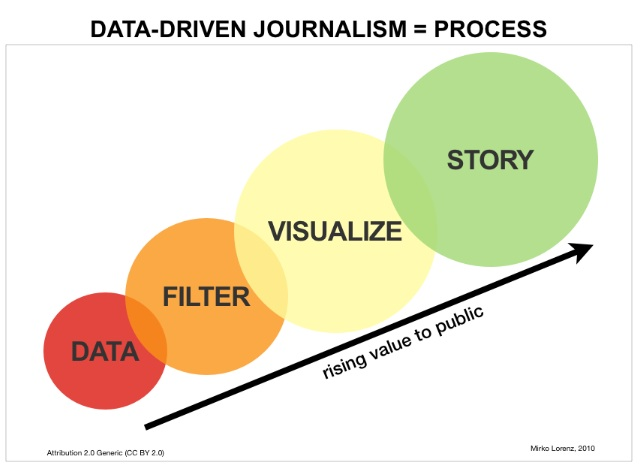

A very brief reminder of our problem
We want to build a WebApplication of the city bike service which helps users to explore the data interactively and intuitivly. Our goal is, that the application can be used for data-driven journalism.
We are provided with a complex data set of the city bike service. Our challenge is now to observe the data and visualize important questions.
Just to provide you a faster entry point to our project, here are our previous prototypes:

Changes to the original VIS design/work plan
Because of confusing overlapping of real route drawing, we decided to use point-to-point (air line) drawing.
We tried to use an inbound circle and an outbound circle for each station to show the difference, but for most stations the in- and outbound rides are distributed equally which lead to more confusion then additional value for the user. So we agreed on using just one circle for the entire rides.
As suggested in the feedback for our last milestone, we made the decision to provide a possibility to compare different stations.
The last time our user scenario and user description was quite loose, so we worked on that and developed a new user scenario as descripted in the next chapter.
User Scenario
In the curriculum of media informatics you are forced to gain knowledge in different forms of journalism. We thought about several user scenarios until we thought about the fact that everybody could be our user, unless they have a computer and a keyboard ( which is necessary for selecting more stations) and they are willing to consume information.
As already described, we want to give the users an interactive and intuitive place to look into the city bike usage data.
We cleaned and filterd the data and are trying to develop our views to tell different stories about the service. Each user should be able to find his/her own story in the data and get the possibility to dig even deeper into it.

Progress
The WebApplication includes JavaScript-Files, JavaScript Libraries, CSS Files, Data Files and Configuration Files.
Providing the data
Because the dataset we got in the beginning is quite distributed we had to think about a way to map the different datasets into a centralized and therefore easy usable datasource. We wrote a C#.NET tool to map the different dataset together, the tool loops through the files, maps them together and creates a JSON-File for the WebApplication. The JSONs hold information about stations, amount of rides and other stuff for example locations.
Starting with severel comprehensive datasets, it was quite hard to provide a small-sized source, that the runtime won't suffer from loading times. Here is a short look at a specific station:
Implementation details
We have separate JavaScript-Files for the map and the charts. We tried to built the map and the charts as stand-alone modules to keep them exchangeable.
We are using JavaScript Libraries like jQuery, google maps API, google charts API and d3 to accomplish our different tasks.
Our data files are JSONs and configuration XMLs. The XMLs are used by the WebApplication to load colours and other design information. Our idea was, to change parts of the design just in the XML without changing the code, it's faster and the error-rate keeps lower.
At the moment we've got an interactive map which shows us all the citybike stations. If you click on a station the lines between stations are drawn. These lines represent the trafficamount (represented through the
line thickness) among the stations. The terminals coloured circles illustrate the total amount of traffic at the stations. If the circle is bigger there is more traffic, if the circle is
smaller there is less traffic. The panel on the right, gives us some developer information about the dataset and will be replaced with the charts. Also it's possible to select more than
one station, this is important for our comparable charts, which will be added at a later point. To select more than one station you have to press the "CRTL"-key and hold it while clicking on a station.

The TreeView mock-up chart uses the damage reports to provide the user with an overview about the damages. The user has the option to choose a district. Each node has a different size which
represents the amount of damage reports for the specific district. After a district has been selected the user sees nodes for each station in that district. The nodesize represents again
the amout of damage reports (for stations). Details about the damages are presented after a click on a station. Again, new nodes, this time each node is another (unique) damage, the size
is the frequency of the specific damage. It's quite hard to use the damage report dataset, because there is a lot of information missing. Most of the times, there is just a possibility to map a damagereport to a mechanic, which was treating this damage report, and not to a specific station. This view should additionaly function as a filter for the other charts. So if you select for example the 2. district, all of the stations in the second district should be marked as selected and all of the charts should be updated.
The Bubble-Chart gets the stations-ID from the clickable map, depending on which station is selected. It shows the correlation between incoming and outgoing rides, as well as the entire usage for the chosen stations. It is also possible to see the incoming and outgoing rides for specific months through the slider under the chart. This will also change the x- and y- axis's range. The color of the bubbles are dependent of their districts and the size of the entire usage. If two stations have the same color, then they're in the same district. Also there is a mouseover-effect to see a tooltip which holds the specific details.
 Major challenges/problems
Major challenges/problems
The (different) datasets were hard to combine. We wrote a tool to map them together.
The damage report dataset doesn't have a unique identifier to map a damage report to a station.
At the moment we're able to get information about the damage reports for all stations but not for a specific one.
Questions
Relative/absoulte amount for the TreeView?
Proportion Map(Navigation) / DetailView?
Future outlooks